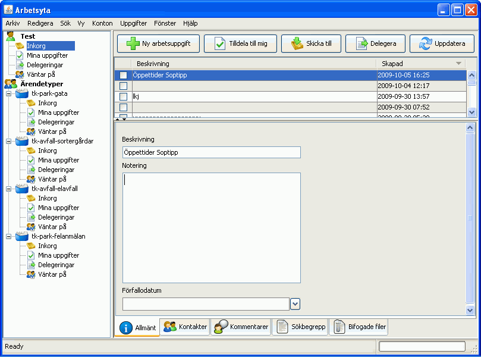

Arbetsytan
Arbetsytan är huvusfönstret i StreaFlow -
ditt skrivbord - och det är där som du skapar, uppdaterar och avslutar arbetsuppgifter.
Arbetsytan är uppdelad i tre huvudområden:
-
I panelen till vänster syns ditt personliga konto samt
de ärendetyper du är knuten till
-
I den övre högra panelen finns en verktygslist med
knappar för de vanligaste funktionerna och en lista med ärenden. Listans innehåll betäms av
vad du har markerat i den vänstra panelen.
-
I huvudfönstret ser du Allmän
information i det ärende du markerat.
-
Längst ned
finns ett antal flikar som innehåller ytterligare information om ärendet. När du markerar
ett ärende är fliken Allmänt alltid vald.
